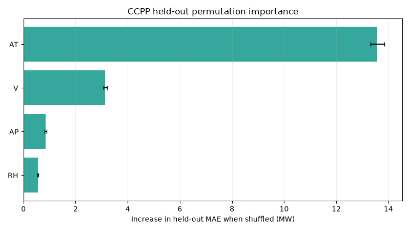

Inlet Air Temperature
--
AT-101 · C
Condenser Vacuum
--
V-201 · cm Hg
Combustion Air Pressure
--
AP-101 · mbar
Intake Moisture
--
RH-101 · %
Measured Power Output
--
PE-401 · MW
Model Estimate Output
--
AI-401 · MW
BENCHMARK STATUS · HISTORICAL REPLAY
Benchmark replay status
What the current evidence shows
FLAGSHIP WORKFLOW · PROPOSED HPCL PILOT
Read-only · human-reviewed · not deployed
From output deviation to operator review
Understand the operating context
Replay measured UCI power-plant records with ambient temperature, vacuum, pressure, humidity, and output.
Compare measured with expected output
A Gradient Boosting model predicts output from process conditions; the held-out benchmark MAE is 2.262 MW.
Surface deviations for investigation
Show the residual beside the benchmark score so an engineer can review evidence; a deviation is not a confirmed fault.
Validate on approved unit data
Next step: read-only shadow mode with an HPCL-approved historian export, operator feedback, and measured outcomes.
Combined-Cycle Power Plant (drag to rotate, scroll to zoom)
Process equipment
Process piping
Measured instrument
Field Instruments
Waiting for sample
PROCESS TRAIN
Air intake → gas turbine → heat-recovery steam generator → steam turbine → condenser and cooling loop
Plant equipment is a detailed visual model. Instrument values come from the selected UCI sample; the dataset does not provide separate tags for every component.
Operations event feed
Current replay window
LOCAL HARDWARE FEED
Camera disconnected
Refinery Quality Inspector
No camera feed
SourceNot connected
Resolution--
Frame rate--
AIR · VISUAL PROXY
A standard camera can compare visible haze/contrast only under fixed lighting. It cannot measure PM2.5, CO2, or invisible contaminants.
For a real reading: PM2.5/PM10 particle sensor, NDIR CO2 sensor, and species-specific gas sensors.
Image brightness--
Color saturation--
Image contrast--
No image analysis yet. Set a reference using the same camera position and lighting.
These are image metrics, not laboratory or safety measurements. Visual differences can come from lighting, camera exposure, sample container, or movement.
DIGITAL TWIN LAB · REAL-WORLD CONNECTION MODEL
System view · not live hardware
HPCL hardware and sensor network simulation
This tab shows an end-to-end hardware connection model for the full candidate instrumentation set. The goal is to understand how air, water, oil, gas, and process sensors connect to transmitters, data acquisition, gateways, signal conditioning, and the read-only dashboard. It is a teaching and engineering illustration, not a live plant or a verified field installation.
Every connection, switch, cable, power rail, transmitter, and signal path below is simulated. The user can see how the components are logically linked and how a read-only gateway can fail or stay online. This is a meaningful operational mock-up that helps a viewer understand the architecture without implying a physical refinery deployment.
PHYSICAL REFINING FLOW · DEMO-ONLY PROCESS TWIN
Waiting for simulated process
How air, water, gas, and oil are represented in the simulated refinery
AIR
Intake → blower → filter → treated air
-- Nm³/h
→
WATER
Tank → pump → media filter → treated water
-- m³/h
→
GAS
Separator → scrubber → cooler → conditioned gas
-- Nm³/h
→
OIL
Feed tank → pump → filter → heat exchanger
-- m³/h
Air treatment
Normal
- Intake air
- Blower load
- Filter / carbon stage
- Treated air stack
Flow-- Nm³/h
PM2.5-- µg/m³
PM10-- µg/m³
CO₂ / VOC-- / --
Water treatment
Normal
- Raw water feed
- Pump transfer
- Media filter
- Polishing vessel
Flow-- m³/h
pH--
Turbidity-- NTU
Conductivity / DO-- / --
Gas conditioning
Normal
- Separator
- Knockout drum
- Scrubber
- Condensed header
Flow-- Nm³/h
Pressure-- bar
H₂S-- ppm
Methane-- %
Oil conditioning
Normal
- Feed tank
- Transfer pump
- Filter / heat exchanger
- Receiver tank
Flow-- m³/h
Outlet temp-- °C
Viscosity-- cSt
Water / particles-- / --
Model boundary: this is an illustrative refinery-style material flow model for training and proposal review. It is not a live physical plant, not a verified equipment design, and not connected to hardware or field instruments.
FOUR-STREAM PROCESS TWIN · SYNTHETIC LIVE VALUES
Waiting for simulated process
Air cleaning, water treatment, gas conditioning & oil conditioning
Follow each material through representative equipment in the 3D yard. Flow markers, tank levels, status indicators, and instrument cards update from the local simulator. Set independent blower, water-feed-pump, and gas-compressor loads; the oil flow and temperature reuse the transfer-skid operating controls.
Inject a simulated bypass:
Air cleaning
Intake → blower → particle filter → carbon bed → treated-air stack
- Air flow
- -- Nm³/h
- Outlet PM2.5
- -- µg/m³
- Outlet PM10
- -- µg/m³
- Outlet CO₂ / VOC
- -- ppm / -- ppm
- Filter ΔP
- -- kPa
Water treatment
Raw-water tank → pump → media filter → treatment vessel → treated-water tank
- Water flow
- -- m³/h
- Outlet pH
- --
- Outlet turbidity
- -- NTU
- Conductivity / DO
- -- µS/cm / -- mg/L
Gas conditioning
Feed separator → knockout drum → scrubber → cooler → conditioned-gas header
- Gas flow
- -- Nm³/h
- Header pressure
- -- bar
- Outlet H₂S
- -- ppm
- Methane indication
- -- %
Oil conditioning
Feed tank → transfer pump → filter → heat exchanger → receiver
- Oil flow
- -- m³/h
- Outlet temperature
- -- °C
- Estimated viscosity
- -- cSt
- Water / particles
- -- % / --
Select a piece of equipment in the 3D yard to inspect its role in the simulated process.
Model equations and assumptions
- Air flow = 1,800 × blower load fraction; PM2.5 / PM10 use illustrative normal/bypass factors of 0.07 / 0.78 and 0.06 / 0.74. CO₂ is not removed.
- Water flow = 46 × feed-pump load fraction (m³/h); illustrative outlet pH is 7.2 normally and 6.35 with treatment bypass. The simulated feed tank receives 52 m³/h and the product tank draws 35 m³/h; one simulation step advances one minute.
- Gas flow = 24 × compressor load fraction (Nm³/h); header pressure = 4.8 + 1.65 × load fraction (bar). H₂S uses a 0.045 normal / 0.96 bypass factor.
- Oil flow and temperature use the transfer-skid model. Estimated viscosity = 38 × exp(−0.018 × (outlet temperature − 40)) cSt; particle count is a fixed illustrative scenario value.
- Clamping is applied to load percentages and tank levels. Sinusoidal variation is cosmetic display variation, not sensor noise derived from a device.
The media-quality calculations are intentionally small demonstrations: the air particle/carbon stages do not remove CO₂; water treatment bypass shifts illustrative pH from 7.2 to 6.35 and increases turbidity; the gas scrubber changes H₂S but not the methane indication; oil-filter bypass changes particle count but does not calculate dewatering. Conductivity, dissolved oxygen, methane fraction, and oil water content are illustrative inputs/estimates, not conserved or validated process outputs.
Model boundary: “air cleaning,” “water treatment,” “gas conditioning,” and “oil conditioning” are generic teaching trains, not a complete refinery process or crude-oil refinery design. Air is cleaned, not refined. Only oil flow and temperature follow the existing transfer-skid equations; other values are synthetic and illustrative, not mass-balanced plant quality, safety limits, recipes, or equipment sizing. Nothing here is connected to physical hardware.
INDUSTRIAL HARDWARE MODEL · 3D SIMULATION
Waiting for simulated I/O
Instrument panel with hard-wired controller and field interfaces
Orbit the 3D assembly to inspect the actual-looking enclosure, DIN-rail power modules, controller PCB, input-interface boards, terminal strips, cable glands, ferruled conductors and soldered PCB joints. Simulated readings follow the transfer skid. This is a representative industrial-style model—not a model of purchased components or an approved build drawing.
DRAG TO ORBIT · SCROLL TO ZOOM · SELECT AN ASSEMBLY
SELECT A COMPONENT
Industrial-style wired assembly
Select a module or instrument to inspect its role and related asset. The animation represents simulated values only; it is not electrical telemetry or a physical hardware connection.
Electrical boundary: this generic 3D visualization does not specify exact part numbers, rated terminals, pinouts, conductor sizes, protective devices, isolation coordination or safety approvals. It is not an assembly drawing. No physical board, field instrument or wire is connected to this page.
MONITORING TOPOLOGY
Loading candidate components
Complete instrument and hardware network
Power rail
Sensor / analyzer
Transmitter / signal conditioning
Controller / gateway
Field bus / network
SIMULATED SIGNAL FLOW
Gateway online
Live path from field hardware to dashboard
Air quality sensors
PM2.5 / PM10
CO2
VOC
→
Signal conditioning
A/D + filtering
4–20 mA / Modbus
Inline analyzer bus
→
Edge / control layer
Read-only gateway
Data register / logger
Switch / power rail
→
Dashboard and twin
RefinAI dashboard
Digital twin view
Health / alarm state
PHYSICAL ARRANGEMENT
Field arrangement only
Process area and component layout
Air handling
Air PM2.5 / PM10
Air CO2
Air VOC
Water utility
Water pH
Water turbidity
Water conductivity
Water DO
Oil circuit
Oil viscosity
Oil water content
Oil particle count
Oil dielectric
Gas safety
Gas species analyzer
H2S detector
Methane detector
Optical gas imaging
Process area
Process pressure
Process flow
Machine vibration
Corrosion / thickness
ASSET NAVIGATION
Demo skid
Equipment hierarchy
Select an asset to focus its health and instrument mappings. The hierarchy is a sample structure, not an HPCL asset register.
SIMULATED CONDITION SUMMARY
Waiting for telemetry
Equipment health matrix
Condition bands are simple demo rules on simulated values—not validated diagnostic thresholds or maintenance instructions.
| Equipment | Key indication | State | Basis |
|---|
RULE-BASED DEMONSTRATION · NO SAFETY FUNCTION
No active demo alarms
Alarm and event console
Illustrative high/low and communication-quality alarms are evaluated against this browser simulation. Acknowledge only records a demo operator action; it does not clear a condition or represent a plant alarm system.
Recent alarm and topology events
INSTRUMENT-TO-DISPLAY TRACEABILITY
Simulated source
Tag-to-dashboard wiring map
Mappings below trace the skid's generated demonstration tags through a signal interface and read-only register/node reference to their dashboard destination. Addresses and node IDs are mock examples; they are not configured devices or an HPCL tag list.
| Tag | Asset / instrument | Simulated reading | Signal route | Example read-only address | Dashboard destination | Quality |
|---|
LOCAL PROTOCOL MOCK · READ-ONLY
Not polled yet
Modbus / OPC UA polling simulator
Poll reads only the current synthetic skid snapshot from this page. No socket, PLC, broker, gateway, or external endpoint is contacted; there is no write operation.
Polls: 0
| Address / NodeId | Data type | Value | Unit | Quality |
|---|---|---|---|---|
| Poll to read the current synthetic snapshot. | ||||
45 ADDITIONAL MODULE TABS
Loading modules
Process analytics & sensor readiness
Benchmark tabs chart included UCI/NASA data. The hardware catalog is a list of candidate measurement options, not a bill of materials: what is required depends on the selected asset, failure modes, and engineering study. Use the simulated transfer-skid twin below to understand a plausible equipment, instrument, and read-only data path; none of its components are physically connected.
For a real pilot, only select instruments needed for the agreed asset and question (for example, pressure/flow/temperature plus vibration or motor-power monitoring for a rotating transfer skid), along with an approved time-synchronized read-only data path. Gas-safety detectors, water/oil analyzers, cameras, and corrosion inspection tools are separate, hazard- or task-specific options—not universal RefinAI requirements. Final selection and installation require plant engineering, instrument, and OT/IT approval.
INTERACTIVE DIGITAL-TWIN LAB · SIMULATED
SIMULATION INITIALIZING
Transfer pump, filter & heat-exchanger skid
This is a transparent, deterministic engineering demonstration—not a plant connection, safety model, or validated process simulator. Controls change a simplified mass balance, pump/line pressure losses, filter restriction, heat-exchanger effectiveness, and receiver inventory. Instrument values are simulated with small display noise.
Operating conditions
Simulation parameter values are illustrative. Do not use the response curves, thresholds, or outputs for design, operating limits, or safety decisions.
Equipment and instrument topology
Simulated time 00:00Interactive 3D skid view
Loading 3D model…Drag to rotate, scroll to zoom. The equipment states and flowing markers follow the internal simulated process; instrument quality can be stale when the gateway is offline.
-- %
LT-101 · level
feed
flow
process
product
-- %
LT-102 · level
Process equipmentTransmitters
4–20 mA / HARTRemote I/O
edge gatewayRead-only historian
OPC UATwin display
4–20 mA / HARTRemote I/O
edge gatewayRead-only historian
OPC UATwin display
Model equations and assumed design basis
All constants below are illustrative placeholders, not measurements or an engineered design. Replace them only with site-approved equipment data.
- Flow = demand × speed × valve opening × feed-level availability × filter factor. Feed-level availability decreases linearly below 20% inventory.
- Pump head = 2 + 7 × speed² bar; discharge pressure subtracts filter and line losses.
- Filter drop = 0.12 + 0.00012 × flow² bar, plus 1.1 bar for the injected restriction; line loss = 0.00045 × flow² bar.
- Feed tank: 45 m³ capacity with 65 m³/h make-up. Receiver: 30 m³ capacity with the configured downstream draw. Levels integrate one simulated minute per real second; overflow is clipped at capacity.
- Pump efficiency = 72%; exchanger effectiveness uses an illustrative UA factor of 0.82 clean / 0.26 fouled. No equipment curve or process fluid properties are fitted.
| Tag | Location / instrument | Simulated value | Signal path | Quality |
|---|
Simulated process trend · chronological simulation only
Online readings are synthetic data generated by this page, not readings from physical instruments. The gateway toggle simulates loss of dashboard telemetry; it does not create a network connection. This demo has no PLC writes and cannot represent an actual safety instrumented system.
MODULE
Awaiting selection
Select a process module
1Process
2Sensor
3Gateway
4Not connected
Choose a module tab above to inspect its data view or hardware requirements.
Actual Generation vs Forecast Output
Performance Delta by Sample
Generation vs Ambient Load Pattern
Selected Physical Record
The record ID points to the row in the included UCI data export. There is no timestamp; replay order is not a chronological operating trend.
| Source row | AT C | V cm Hg | AP mbar | RH % | Measured MW | Estimate MW | Residual MW |
|---|---|---|---|---|---|---|---|
| Loading data | |||||||
Benchmark relationships and hypotheses to test
Ambient temperature varies with measured CCPP output.
The UCI benchmark contains both values and supports an association analysis. It does not establish a causal mechanism, a refinery effect, or a controllable operating target.
Exhaust vacuum is an input, not a diagnosis.
Benchmark plots can show how vacuum values co-vary with output. Without timestamps, equipment labels, and site context, they cannot identify condenser degradation or a maintenance need.
Humidity is included in the benchmark model.
Its relationship with output can be explored across the measured records. The dataset alone does not quantify a causal efficiency penalty or transfer that relationship to refinery equipment.
A residual is not a fault alarm.
The absolute residual can be compared with the held-out set MAE as benchmark context. These shuffled records have no time order or maintenance labels, so they cannot establish persistence, normality, or a cause.
C-MAPSS: Sensor Degradation (5 engines)

C-MAPSS: Engine Lifetime Distribution

C-MAPSS: Sensor Correlation Matrix

CCPP: Feature vs Energy Output

CCPP: Energy Output Distribution

Benchmark interpretation boundaries
| Evidence | What this prototype can show | What it cannot establish |
|---|---|---|
| Temperature, vacuum, pressure, and humidity | Measured associations with CCPP output in this public dataset | Causality, refinery operating limits, or equipment condition |
| Model estimate and residual | Held-out prediction error on individual benchmark records | An alarm threshold, measured energy waste, or a fault diagnosis |
| Replay order | Navigation through the fixed held-out split | A chronological trend or persistent deviation; source records have no timestamps |
| Operator workflow | A proposed read-only, human-reviewed pilot process | Operational recommendations before validation with approved site data |
Research grounding and industrial AI framing
Regime-aware baselines are central to credible process monitoring.
Qin's survey reviews data-driven process monitoring and diagnosis methods. This prototype applies the evidence-boundary idea with an observed-input support check and benchmark residual context; it does not infer process regimes because these records have no timestamps or refinery operating labels.
Prognostic models need time alignment, labeled failures, and operator review.
Condition-based maintenance research emphasizes diagnostics and prognostics grounded in equipment condition. Public PHM datasets such as NASA C-MAPSS support method experiments, but a refinery pilot still needs time-aligned historian data, maintenance labels, and site validation.
Prediction intervals make uncertainty visible rather than hiding it.
The CCPP model now uses a reserved calibration split to form split-conformal output intervals. The displayed held-out coverage is a benchmark diagnostic; exchangeability assumptions may fail under process drift, and no refinery coverage is claimed.
PCA screens both modeled variation and residual variation.
Hotelling T² summarizes position within the retained principal-component space; Q summarizes reconstruction residual outside it. Their calibration-tail flags and largest input contributions are statistical context only. The CCPP table has no fault labels or time order, so these are not fault detections.
Feedback is captured for review, not used as an automated label.
Accept, defer, and reject decisions can be recorded with a note and exported from this browser. The log is local demonstration data only; it is not an operator approval record, and it does not retrain the model.
Methods informing the prototype
Qin (2012), Survey on data-driven industrial process monitoring and diagnosis · Jardine, Lin & Banjevic (2006), A review on machinery diagnostics and prognostics implementing condition-based maintenance · Jackson & Mudholkar (1979), Control procedures for residuals associated with principal component analysis · Angelopoulos & Bates, A Gentle Introduction to Conformal Prediction and Distribution-Free Uncertainty Quantification
NASA PCoE C-MAPSS repository · UCI Combined Cycle Power Plant dataset
Read the research-to-feature analysis, validation details, and data-dependent limits.
References motivate methods, not claims about HPCL. This prototype does not establish refinery diagnosis, savings, or live plant control.
Dataset Provenance
| Dataset | Source | Rows | Use |
|---|---|---|---|
| NASA C-MAPSS FD001 | NASA PCoE repository | 20,631 train rows; 100 test engines | Simulated aircraft-engine RUL benchmark |
| UCI Combined Cycle Power Plant | UCI ML Repository | 9,568 measured records, 2006-2011 | Real plant environmental inputs and net output; no timestamps |
The 3D scene is a reference combined-cycle plant model. UCI records are measured physical observations but shuffled and timestamp-free; NASA C-MAPSS is simulated aircraft-engine data. Neither is HPCL refinery data.
What this model layer is actually doing
It estimates CCPP output for held-out records.
The Gradient Boosting model uses the measured inputs in the UCI Combined Cycle Power Plant dataset. It is not a refinery model and does not predict live plant behavior.
It shows prediction error on each record.
A residual is measured output minus model estimate. Its size alone does not establish an unusual operating condition, inefficiency, or maintenance trigger.
Permutation importance measures predictive reliance.
Each held-out input is shuffled independently; the resulting MAE increase estimates how much the fitted benchmark model relies on that input. It is not a causal effect, and correlated inputs can share or mask importance.
Heuristic indicators are not asset-health scores.
The watchlist and review prompts are demonstration UI based on sample conditions. They are not validated component assessments, safety limits, or maintenance recommendations.
Editable assumptions expose the value formula.
The explorer calculates a scenario from user-supplied recovery, hours, tariff, and cost assumptions. It does not measure savings, avoided risk, or refinery economics.
RUL Prediction: Actual vs Predicted

Energy Prediction: Actual vs Predicted

CCPP: Held-out permutation importance

Positive values mean shuffling increased MAE on the fixed test split. Error bars show repeat variability. This diagnostic is model- and dataset-specific; correlated inputs and unrealistic shuffled combinations limit interpretation.
Public Benchmark Results
| Task | Benchmark and test | Model | MAE | R2 | Interpretation |
|---|---|---|---|---|---|
| Remaining useful life | NASA C-MAPSS FD001; official test, 100 engines | Gradient Boosting | 12.16 cycles | 0.811 | Median baseline MAE: 38.01 cycles; RUL capped at 125 |
| Power output | UCI CCPP; held-out 20% test, 1,914 rows | Gradient Boosting | 2.262 MW | 0.967 | Predicts plant output; residuals are not measured energy waste |
| Unsupervised outlier flags | NASA C-MAPSS FD001; 100 test endpoints | Isolation Forest | -- | -- | Flagged 6 endpoints; no anomaly ground-truth labels |
RUL model selection uses an engine-held-out split; final RUL metrics use the dataset's official test labels. Permutation importance is an additional held-out CCPP diagnostic, not a causal explanation. These benchmark scores are not validated refinery performance.
Prediction uncertainty and input support
Split-conformal bounds and PCA thresholds are calibrated on reserved UCI training records. Test coverage and flag rates are benchmark diagnostics, not guarantees under distribution shift or HPCL estimates. PCA flags and range checks are statistical screens, not fault alarms; the leading feature contribution is descriptive, not causal.
HUMAN-IN-THE-LOOP · DEMONSTRATION
Browser-local only
Record a sample review
Pause replay before entering feedback. This mock review log is stored only in this browser and is not sent to a server or treated as operational approval.
Reviewing source row --
0 saved
No review saved for this sample.
Illustrative asset watchlist
Heuristic indicators from sample conditions and model residuals. These are not component sensors, validated health scores, or safety limits.
Rule-based operator prompts
Prompts for review only. Verify against site procedures and qualified engineering judgment.
Illustrative sensitivity scenario
Illustrative output-- MW
Demo review score--
Output change vs sample-- MW
Hand-coded sensitivity coefficients are for interface demonstration, not a trained forecast or validated plant physics. Review priority changes only the demo score, not the output estimate.
TRANSPARENT BUSINESS CASE
Assumption-driven, not a savings claim
Illustrative generation-value explorer
Scenario generation-- MWh/year
Gross annual value--
Net annual value after O&M--
First-year value after pilot--
Simple payback--
Net annual value by recovery scenario
Formula: measured sample output × assumed recovery fraction × operating hours × assumed tariff, less annual operating cost. First-year value also subtracts one-time pilot cost. The sample is from UCI CCPP, not a refinery. All commercial inputs are editable placeholders; confirm them with plant and finance teams before using this estimate.
Innovation Catalog Summary
The wider ideation catalog is exploratory. This prototype focuses on a proposed refinery efficiency and maintenance decision-support pilot; each opportunity needs validation against the chosen HPCL business track and challenge video.